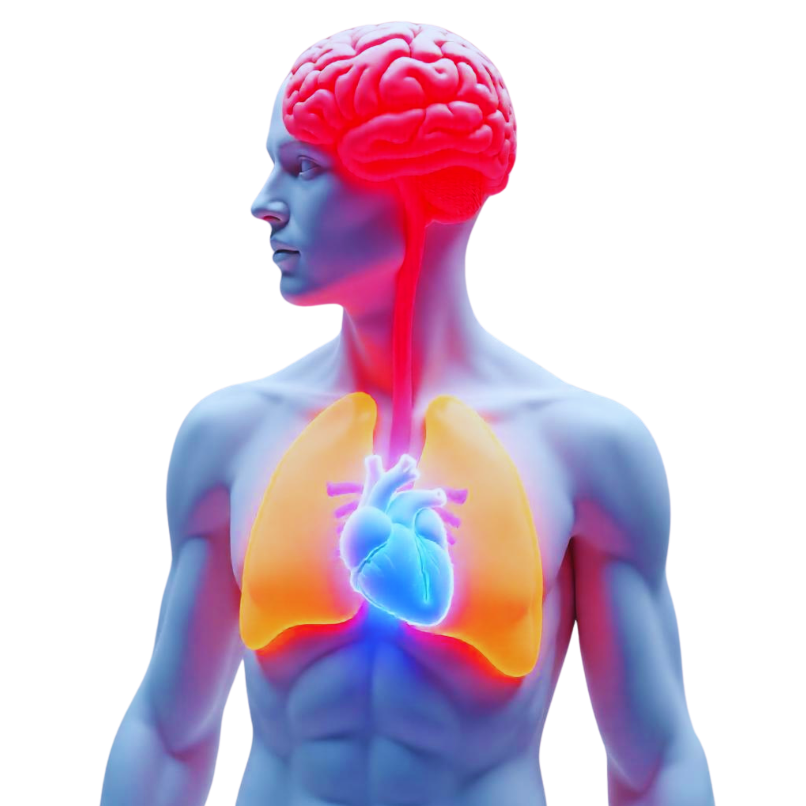

Diseases Prediction
(Heart, Lung, Brain)
Our project " MediPredict", uses machine learning to predict diseases related to the heart, lungs, and brain. By analyzing key health indicators, our model helps identify potential risks early, offering insights that could support timely medical interventions. Designed for accuracy and ease of use, MediPredict aims to make advanced health diagnostics accessible and proactive for everyone.
